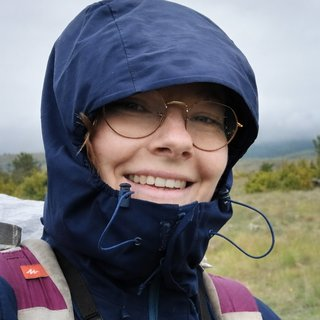

Ingénierie écologique
Inventaires, suivis de populations et protocoles de terrain : mettre la rigueur scientifique au service de la biodiversité.
Compétences clés
- Inventaires naturalistes
- Suivi de populations
- Conception de protocoles
- Coordination de missions terrain
- Capture & manipulation d'individus
- Pièges photographiques
- Analyse de données (R, Excel, QGIS)
- Outils IA
- Rédaction scientifique
Mon parcours en ingénierie écologique
Cliquez sur une catégorie pour n'afficher qu'elle, puis à nouveau pour tout revoir. Survolez un élément de la frise pour en voir le détail. Frise complète sur la page CV.
- L3 Écologie
- M1-2 Écologie
- Mésanges
- Namibie
- Doctorat MNHN
- Le Chêne
- CNER
- BEBOP & Vienne Nature
- Projet CROA
- LPO Hérault
- IA pour écologues
- Diagnostic écologique
En images


Expériences de terrain
Stage à la Station d'Écologie Théorique et Expérimentale de Moulis (Ariège). Encadrant : Maxime Cauchoix. Suivi de la reproduction des mésanges charbonnières et bleues, capture d'individus, analyse de données issues de pièges photographiques.
Engagement associatif : naturalisme & conservation
Bénévolat auprès de plusieurs associations naturalistes et de conservation : sorties naturalistes, participation aux actions de terrain, identification d'espèces.
Formation
10/2026
Méthodes et outils de diagnostic écologique en milieux terrestres
06/2026
Training course « AI for ecologists: a toolkit »
12/2021